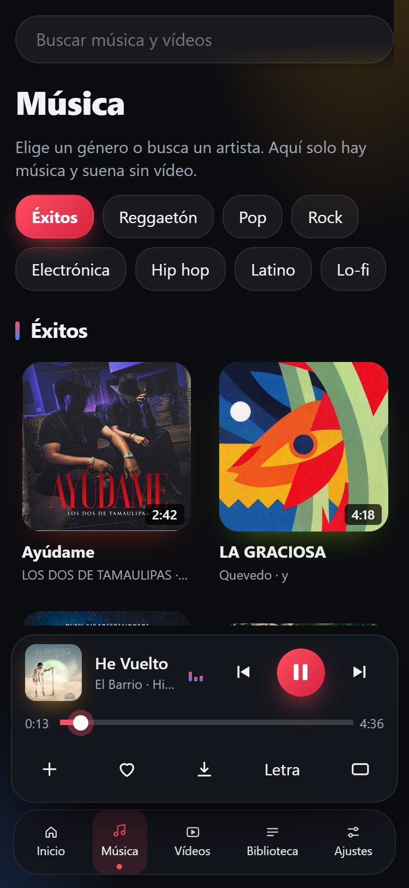
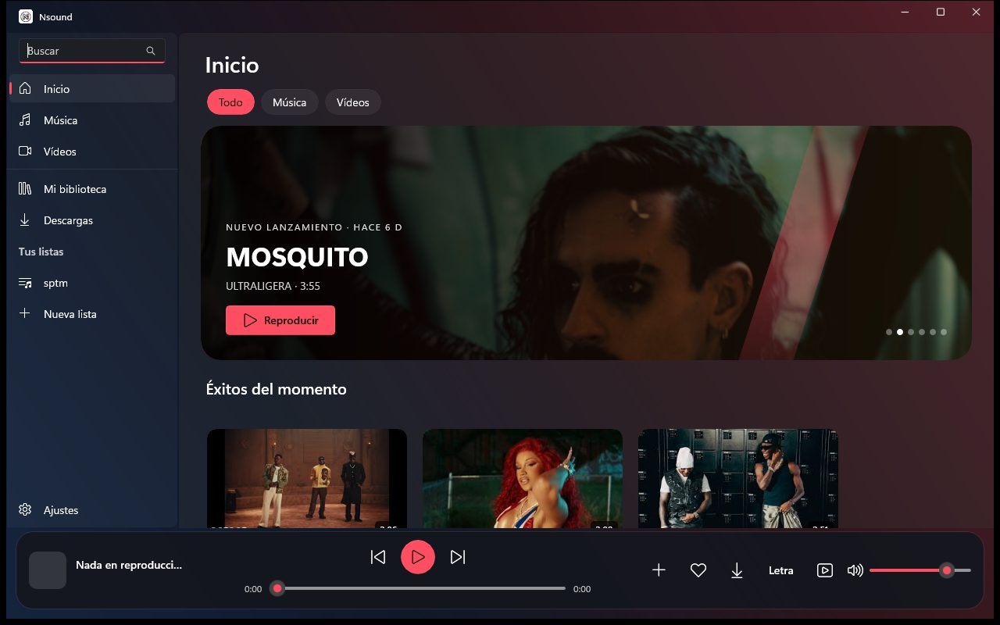

Tu música y tus vídeos, sin cuentas ni suscripciones.
Busca, guarda tus listas, mira la letra sincronizada y sigue escuchando con la pantalla apagada. Un reproductor personal para Windows, Android e iPhone.
Todo lo que hace
Pensado para que se sienta como una app, no como una página.
Búsqueda con YouTube
Los resultados aparecen dentro de la app y se reproducen con el reproductor oficial. Música muestra solo canciones de estudio, sin intros ni charla; Vídeos, solo vídeos.
Música por géneros
Éxitos, reggaetón, pop, rock, electrónica, hip hop, latino y lo-fi.
Vídeos variados
Eventos, series, YouTubers y más. Navega con el vídeo en una ventana flotante.
Biblioteca y listas
Guarda canciones y crea tus listas. Se quedan en tu dispositivo.
Importar listas
Una canción, una lista pública o un artista de YouTube, Spotify, Deezer, Apple Music o SoundCloud.
Cola de reproducción
Mantén pulsada una canción para ponerla a continuación o al final. Reordena y quita.
Pantalla de bloqueo
Carátula, artista y botones de anterior y siguiente, como un reproductor de música.
Letra sincronizada
Con LRCLIB, una base de datos abierta.
Ecualizador
10 bandas y ajustes preestablecidos.
Seguir escuchando
Lo último que sonó, en Inicio. Solo se guarda en tu dispositivo.
8 estilos
Con colores que cambian según la carátula y una pantalla Reproduciendo que late con la música.
Descargas libres
Solo del catálogo con licencia libre (Creative Commons). Nada de YouTube.
Así se ve
Cambia el estilo de esta página: usa los mismos colores que la app.


Cómo instalarlo
Elige tu sistema. Ninguna sale de una tienda, así que tu móvil o tu PC pedirá una confirmación: es normal.
- Necesitas Windows 10 (1809) o superior.
- Descarga el
.zipde Nsound y extrae todo en una carpeta (clic derecho → Extraer todo). - Abre
Nsound.exe. - Si sale «Windows protegió su PC»: Más información → Ejecutar de todas formas. Es normal: la app no está firmada.
Para desinstalar, borra la carpeta. No necesita permisos de administrador.
- Necesitas Android 7 o superior.
- Descarga el
.apken el móvil y ábrelo. - Android pedirá permitir instalar desde esa fuente: acepta en Ajustes. Puedes quitar el permiso después.
- Si Play Protect avisa de «App no verificada»: Más detalles → Instalar de todas formas.
- Pulsa Instalar y luego Abrir. Acepta las notificaciones para ver el control de reproducción.
- El
.ipano está firmado: se firma con tu Apple ID al instalar. Lo más fácil es Sideloadly en tu ordenador (en Windows, con iTunes e iCloud descargados de Apple.com). - Conecta el iPhone por cable y pulsa Confiar.
- Arrastra el
.ipaa Sideloadly, escribe tu Apple ID y pulsa Start. - En el iPhone: Ajustes → General → VPN y gestión de dispositivos → tu Apple ID → Confiar.
- Activa Ajustes → Privacidad y seguridad → Modo desarrollador y reinicia.
- Abre Nsound. Con un Apple ID gratuito la app caduca a los 7 días y hay que reinstalarla.
Que se renueve sola
SideStore recomendada
Renueva la app en el propio iPhone, sin ordenador. Instálalo una vez con su guía oficial y abre el .ipa con SideStore.
AltStore
Renueva por wifi mientras tu ordenador (con AltServer) esté encendido en la misma red. altstore.io
TrollStore
Instala sin que caduque nunca, pero solo funciona en iOS 14.0–16.6.1 y 17.0. Guía
No recomendamos las tiendas con certificados «empresariales» (ESign, Scarlet…): Apple los revoca de golpe y la app deja de abrirse. Con un Apple ID gratuito el límite es de 3 apps a la vez.
Cómo se usa
Seis cosas que conviene saber.
- Buscar: escribe arriba el nombre de una canción, un artista o un vídeo.
- Música y Vídeos: cada apartado muestra solo lo suyo. En Música salen solo canciones de estudio; en Vídeos, solo vídeos.
- Guardar: toca el corazón para guardar en tu biblioteca, o «+» para añadir a una lista.
- Cola: mantén pulsada una tarjeta (clic derecho en el ordenador) y elige «a continuación» o «al final». Ábrela con «Cola» en Reproduciendo.
- Importar una lista: Biblioteca → Importar. Pega el enlace de una canción, una lista pública o un artista.
- Estilo: Ajustes → Aspecto. «Automático» sigue al modo claro u oscuro de tu móvil.
Ayuda
Si algo falla, empieza por aquí.
La música se para al bloquear el móvil
Nsound reproduce con el reproductor de YouTube incrustado, que a veces se pausa al apagar la pantalla. La versión nueva de Android mantiene la música con una notificación de reproducción (acepta el permiso de notificaciones) y la app intenta reanudar sola. Si aun así se para: en Ajustes del móvil → Batería → Nsound, elige «Sin restricciones» y no cierres la app desde recientes. Sigue siendo una beta.
En el iPhone, ¿mejor la app o la web?
La app instalada: mantiene la música con la pantalla bloqueada de forma más fiable. Desde Safari, la página usa un truco (un audio silencioso) para seguir viva al bloquear, pero iOS puede cortarla igualmente. Si lo usas desde la web, abre la web desde «Añadir a pantalla de inicio» y no la cierres.
No carga la búsqueda o salen resultados vacíos
Comprueba la conexión. YouTube puede limitar las peticiones durante unos minutos: espera y vuelve a probar.
El botón Atrás de Android no cierra «Reproduciendo»
Actualiza a la última versión: ya cierra primero Reproduciendo, la cola y los menús, y minimiza el vídeo.
En el iPhone la app caduca a los 7 días
Es una limitación de Apple con los ID gratuitos. Hay que volver a instalarla con Sideloadly o AltStore (este último la renueva solo).
Windows dice «protegió su PC»
Es normal: la app no está firmada. Pulsa «Más información» y luego «Ejecutar de todas formas».
¿Cómo guardo mi biblioteca o la paso a otro dispositivo?
En Biblioteca pulsa «Exportar»: se crea un archivo con tus canciones guardadas y tus listas, solo con lo que tú guardaste. Para recuperarlo, en «Importar» elige ese archivo y se añade sin borrar nada de lo que ya tengas. Nsound no tiene cuentas: cada persona guarda su propio archivo.
Una canción no se importa
Puede que no exista en YouTube Music con ese título. Al terminar, la app muestra la lista de canciones sin encontrar.
¿Se puede descargar música o vídeo de YouTube?
No. Nsound reproduce YouTube con su reproductor oficial y no extrae ni descarga contenido. Las descargas solo existen para contenido libre (Creative Commons).
Quiero informar de un fallo
Abre una incidencia con: modelo de móvil, versión de Android o iOS, versión de Nsound, si usabas Wi‑Fi o datos, qué hacías y cuánto tardó en fallar. Una captura ayuda mucho.
¿Es de código libre?
El código es visible y se puede usar y modificar sin fines comerciales (licencia PolyForm Noncommercial). No se puede vender ni publicar copias comerciales, y el nombre y logo de Nsound son de la marca.
Contacto y retirada
Si eres titular de derechos o de una marca y quieres que se retire o se corrija algo, abre una incidencia en GitHub indicando qué y dónde. Se atiende lo antes posible.